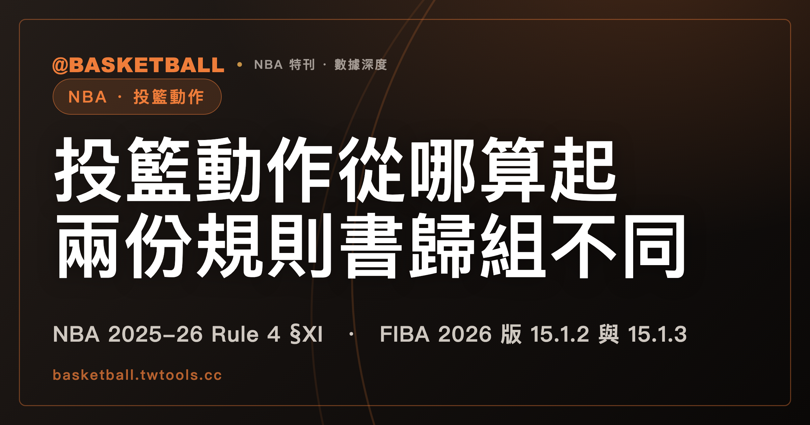

投籃動作的起點怎麼分組？NBA 2025-26 與 FIBA 2026 的歸法不同
NBA 2025-26 規則書 Rule 4 §XI 把 drives to the basket 與 other moving shots 寫在同一句，以球員 gathers the ball and continues through with a shot 起算（take foul situation 且 clocks are not expiring 時，改以 the player's shoulders start upward 起算），jump shots 另以 starts to bring the ball upward towards the basket 起算。FIBA 2026 版規則書（2026 年 10 月 1 日生效）Art. 15.1.2 則把 jump shots 與 other moving shots 寫在同一款，drives to the basket 另列 15.1.3。

新手村｜規則入門・投籃動作
本文依據 NBA 2025-26 規則書的 Rule 4 Section XI（Field Goal Attempt），以及 FIBA 2026 版規則書 v1-1（2026 年 10 月 1 日生效）的 Article 15（Player in the act of shooting）。兩份全文文字檔都是 2026 年 10 月 4 日取得。
罰球數和三秒通融，都要先問球員是不是在投籃動作中。站內的違例與犯規有什麼不同，把「投籃動作中」當作罰球數的條件；進攻三秒什麼時候開始算，把它當作 NBA 2025-26 Rule 10 §VI(b) 通融的前提。這個前提本身怎麼從條文判斷，是本文要讀的。
「投籃動作」是站上對 act of shooting 的慣稱，規則書只有英文。跳投、切入也是中文慣稱，規則書用的是 jump shots 與 drives to the basket。shooting motion、take foul 這類規則書用語，本文保留英文，不另譯。
NBA 2025-26 規則書與 FIBA 2026 版規則書都把投籃動作的起點按動作分開寫，但分法不同。讀完之後，你可以拿一個動作，自己到兩份條文裡找它的起點和終點。
起點由裁判判斷、終點要兩個條件：NBA 2025-26 的投籃動作
NBA 2025-26 規則書把投籃動作寫在 Rule 4 Section XI，節名是 Field Goal Attempt。首句說明 field goal attempt 是球員把球投進 his basket、想得到 field goal 的嘗試。
定義投籃動作的句子在後面，原句是：The act of shooting starts when, in the official’s judgment, the player has started his shooting motion and continues until the shooting motion ceases and he returns to a normal floor position.
起點是裁判判斷球員已經開始 shooting motion 的那一刻。終點要等 shooting motion 停止，而且球員回到 normal floor position，兩個條件用 and 連接。
終點句裡沒有寫球離手。球離手這個條件，要到 FIBA 2026 版的 Ends 項才出現。
球出手之後在空中的階段，以及節末時間到時怎麼處理，歸同一批新文章裡的節末球在空中那篇。
起點分兩句：NBA 2025-26 把 jump shots 與另外兩種動作分開寫
§XI 接下來用兩句，按動作寫 shooting motion 從哪一刻開始：
| 動作（規則書用語） | NBA 2025-26 Rule 4 §XI 的起算句（意譯） |
|---|---|
| jump shots | 進攻球員 starts to bring the ball upward towards the basket，也就是開始把球向籃框方向往上帶 |
| drives to the basket 或 other moving shots | 球員 gathers the ball，並 continues through with a shot |
第二列那一句帶一個括號。括號的前提有兩個：take foul situation，以及 clocks are not expiring。兩個前提一起成立時，起點改成 the player’s shoulders start upward，也就是球員的肩膀開始往上。
§XI 沒有定義 take foul situation 與 clocks are not expiring。Rule 4 §IV(i)(1) 在 transition take foul 的定義裡，另有一個 take foul 的括號說明：a foul in which the defender does not make a play on the ball，也就是防守者沒有去爭球的犯規。§XI 沒有引用 §IV，兩處的 take foul 是否同義，條文沒有寫。jump shots、drives to the basket、other moving shots 這三個詞，兩份規則書也都沒有各自的定義句。一個實際動作要歸進哪一組，條文沒有給判準。gather 則有定義，在 Rule 4 §III，分成兩款：經傳球接球或取得 loose ball 的球員，以及運球中控制球的球員。§III(b) 的三款已經列成表，見走步篇。運球什麼時候算結束，歸同一批新文章裡的運球結束與二次運球那篇。
兩款起訖：FIBA 2026 版 15.1.2 與 15.1.3 的 Ends 項逐字相同
FIBA 2026 版規則書的 Article 15 共有 15.1.1 到 15.1.8 八個子條。15.1.1 是 shot、tap、dunk 的定義，已被引用在0.3 秒規則篇。投籃動作的起點與終點，寫在 15.1.2 與 15.1.3：
| 款次 | 對象 | Starts 項（意譯） |
|---|---|---|
| 15.1.2 | jump shots 或 other moving shots | 球員開始把肩膀和球一起往對手籃框方向往上帶 |
| 15.1.3 | continuous movement on drives to the basket | 球員 has gathered the ball 而且球停在手中，時機是完成運球或在空中接球之後，並且球員 continues the shooting motion preceding the release of the ball for a goal |
15.1.3 的後段另外描述這個動作：它是球員在 the team’s frontcourt 的動作，typically（通常）從進攻方 3 分線與籃框之間開始。
兩款各有一個文字相同的 Ends 項，整句是：Ends when the ball has left the player’s hand(s), or if an entirely new act of shooting is made and, in case of an airborne shooter, both feet have returned to the floor.
or 之後半句裡的 and, in case of an airborne shooter 管到哪裡，條文沒有標明。這裡照原文整句引，不替它斷句。
歸組不同：other moving shots 在 NBA 2025-26 與 FIBA 2026 版
前面兩節的分組，可以排成一張表：
| 動作 | NBA 2025-26 Rule 4 §XI | FIBA 2026 版 Art. 15 |
|---|---|---|
| jump shots | 單獨一句，以球往上帶起算 | 15.1.2，以肩膀和球往上起算 |
| other moving shots | 與 drives to the basket 同一句，以 gather 之後 continues through with a shot 起算 | 15.1.2，與 jump shots 同一款 |
| drives to the basket | 與 other moving shots 同一句 | 15.1.3 另列一款，以球在運球結束後停在手中起算 |
起算的動作也跟著分組不同。NBA 的 shoulders 在 §XI 裡只出現在 take foul 的括號。FIBA 2026 版的一般起點就寫 shoulders and the ball，出現在 15.1.2。
分組不同是否影響判罰，兩份條文都沒有寫。
投籃的球員要在 frontcourt：FIBA 2026 版 15.1.4 與兩個例外
Art. 15.1.4 的首句是：For a player to be in the act of shooting, the player must be in the frontcourt.
接著它列出一個例外：球員可以在場上任何位置，限於兩種計時器到期之前的 last action。一種是節末或延長賽結束時 game clock 到期，另一種是比賽任何時候 shot clock 到期。這兩種情形的起點是 has gathered the ball and it comes to rest in the player’s hand(s)。
15.1.4 只寫了這兩種情形的起點。終點怎麼算，15.1.4 沒有寫，也沒有引用 15.1.2 與 15.1.3 的 Ends 項。
frontcourt 的定義在 Art. 2.4。Art. 11.1 另寫，球員的位置由他碰到地面的地方決定，在空中時保有上一次碰地處的狀態。15.1.4 沒有引用 Art. 2.4 與 Art. 11.1，兩條合讀的結果，條文沒有寫。
NBA 2025-26 規則書 Rule 4 §XI 裡，本機快照查無 frontcourt 與 backcourt 字樣。
球不必離手：NBA 2025-26 Rule 4 §XI 與 FIBA 2026 版 15.1.6
NBA 2025-26 Rule 4 §XI 的原句是：It is not essential that the ball leave the shooter’s hand. His arm(s) might be held so that he cannot actually make an attempt.
第一句本身沒有寫前提，第二句以 might 舉了手臂被抓住的例子。這兩句裡沒有 act of shooting 一詞。
FIBA 2026 版 Art. 15.1.6 寫的是另一款：投籃動作中，球員的手臂可能被對手抓住，以致無法得分，In this case 球不必離手。這一款的 not essential 以手臂被對手抓住為條件。
兩邊的終點句都與這個 not essential 並存。FIBA 的 Ends 項寫球離手，NBA §XI 的終點句寫 shooting motion 停止。條文沒有寫 not essential 是終點句的例外還是補充。
另外，NBA 2025-26 Rule 7（Shot Clock）§II(d)(1) 寫，legal field goal attempt 的條件之一是 The ball must leave the player’s hand prior to the expiration of the shot clock。它和 Rule 4 §XI 的 not essential 句分屬兩條規則，條文沒有把兩者連起來。
步數與被犯規後傳球：FIBA 2026 版 15.1.5、15.1.7、15.1.8 三款
FIBA 2026 版 Art. 15.1.5 寫，合法步數的多少與投籃動作之間沒有關係。原文是 There is no relationship between the number of legal steps taken and the act of shooting。NBA 2025-26 的步數怎麼算，看走步篇。
Art. 15.1.7 的適用情形是：球員在 jump shots 或 other moving shots 的投籃動作中，而且 after being fouled。條文接著列出三項，以 or 連接：
- passes the ball off（把球傳出去）
- if the ball is moved upwards in a direction away from the basket（球向遠離籃框的方向往上移動）
- if the player is not facing the basket when the ball is moved in an upwards motion（球往上移動時，球員沒有面向籃框）
結論句 that player is no longer considered to have been in the act of shooting 接在第三項之後，原文沒有再拆開。
Art. 15.1.8 的適用情形是：球員在 drives to the basket 的投籃動作中，被犯規之後 passes the ball off。結論句相同：球員不再被視為曾在投籃動作中。
這三款的詞句（passes the ball off、no longer considered、facing the basket、away from the basket、legal steps、relationship between），NBA 2025-26 規則書全文在本機快照查無逐字對應。這只是詞句比對，不代表 NBA 在判罰上怎麼處理這類情形。
三個假設動作，NBA 2025-26 與 FIBA 2026 版各從哪裡算起、寫到哪裡？
下面三個動作都是假設，不是任何一場比賽。歸類由讀者看動作決定，這裡先替每個動作指定歸類。三個動作都假設球員在自己球隊的 frontcourt，game clock 與 shot clock 都沒有接近到期。
假設一：甲隊球員把球和肩膀一起往上帶，起跳，在空中出手後雙腳落地（歸為 jump shots）
- NBA 2025-26 Rule 4 §XI：jump shots 那一句，起點是球員 starts to bring the ball upward towards the basket，也就是球開始往上帶的那一刻，同時要裁判判斷 shooting motion 已經開始。終點要 shooting motion 停止且球員回到 normal floor position 兩個條件都成立。
- FIBA 2026 版 Art. 15.1.2：起點是肩膀和球開始往上的那一刻。frontcourt 的條件（15.1.4）在這個假設裡成立。終點句同時點名了球離手與 airborne shooter 雙腳回到地面。這個動作兩件事都發生。or 之後半句管到哪裡，本題同樣不替它下結論。
假設二：乙隊球員運球進 frontcourt，雙手放到球上結束運球，接著繼續投籃（歸為 drives to the basket）
- NBA 2025-26 Rule 4 §XI：起點是球員 gathers the ball 並 continues through with a shot。雙手放到球上、結束運球，是 Rule 4 §III(b)(1) 寫的 gather 情形之一。如果這一球同時符合括號的兩個前提（take foul situation 與 clocks are not expiring，這裡只是假設它們成立），起點改成肩膀開始往上。終點與假設一相同。
- FIBA 2026 版 Art. 15.1.3：起點是運球結束、球停在手中，而且球員 continues the shooting motion。Art. 15.1.3 沒有為 gathered 另設定義句，和 NBA Rule 4 §III 的 gather 是否同義，條文沒有寫。兩邊的起點各自讀自己的條文。終點是兩款相同的 Ends 項。
假設三：丙隊球員已開始投籃動作，手臂被防守者抓住；丁隊球員切入、被犯規之後把球傳出去
- 丙隊球員，手臂被抓住：FIBA 2026 版 Art. 15.1.6 寫，這種情形球不必離手。NBA 2025-26 Rule 4 §XI 也有 not essential 一句，下一句舉了手臂被抓住的例子。
- 丁隊球員，切入（歸為 drives to the basket）、被犯規之後 passes the ball off：FIBA 2026 版 Art. 15.1.8 寫，他不再被視為曾在投籃動作中。NBA 2025-26 規則書查無逐字對應的句子（見上一節），這一題 NBA 這邊沒有條文可引。
做法是三步：先判斷動作歸進哪一組，再找那一組的起算句與終點句，再看 frontcourt、被抓住、被犯規後傳球這幾款有沒有加條件。這是本文讀條文的順序，規則書自己沒有這樣寫。
範圍與版本：只比 NBA 2025-26 與 FIBA 2026 版條文的字面
本文的範圍是 NBA 2025-26 規則書的 Rule 4 §XI、§III、§IV(i)(1) 與 Rule 7 §II(d)(1)，以及 FIBA 2026 版規則書 v1-1（2026 年 10 月 1 日生效）的 Art. 2.4、11.1 與 Article 15。文中的「查無」，都指在本機保存的全文文字檔做全文比對的結果。本文只比條文字面，裁判實際怎麼判，不在本文範圍。規則書會隨賽季或修訂更新，之後以官方最新版為準。
讀者可以主張兩邊的終點實際上相近：FIBA 的 Ends 項 or 之後的半句也寫到 airborne shooter 雙腳回到地面，Art. 15.1.6 又寫了手臂被抓住時球不必離手。讀者也可以主張分組不同只是排版。
常見問題
NBA 2025-26 規則書的投籃動作，從什麼時候開始？
依 NBA 2025-26 規則書 Rule 4 §XI，起點是裁判判斷球員已經開始 shooting motion。jump shots 以球員開始把球向籃框方向往上帶為起點；drives to the basket 與 other moving shots 以球員 gathers the ball 並 continues through with a shot 為起點，take foul situation 且 clocks are not expiring 時，改以肩膀開始往上為起點。見上文「起點分兩句」一節。
FIBA 2026 版規則書的投籃動作，寫到哪裡結束？
依 FIBA 2026 版規則書（2026 年 10 月 1 日生效）Art. 15.1.2 與 15.1.3，jump shots、other moving shots 與 drives to the basket 的 Ends 項文字相同：Ends when the ball has left the player’s hand(s), or if an entirely new act of shooting is made and, in case of an airborne shooter, both feet have returned to the floor. Art. 15.1.4 的兩個例外情形只寫了起點。見上文「兩款起訖」一節。
規則書有寫球不必離手嗎？
有，但情境不同。NBA 2025-26 規則書 Rule 4 §XI 有一句 It is not essential that the ball leave the shooter’s hand，下一句舉手臂被抓住為例；FIBA 2026 版規則書（2026 年 10 月 1 日生效）Art. 15.1.6 則限定在投籃動作中手臂被對手抓住的情形。見上文「球不必離手」一節。
FIBA 2026 版對投籃球員的位置有什麼規定？
FIBA 2026 版規則書（2026 年 10 月 1 日生效）Art. 15.1.4 寫，球員要在 frontcourt 才算在投籃動作中，並列出兩個可在場上任何位置的例外：節末或延長賽結束時 game clock 到期前的 last action，以及比賽任何時候 shot clock 到期前的 last action。見上文「投籃的球員要在 frontcourt」一節。
資料來源
- NBA 2025-26 賽季規則書（Official Playing Rules）：Rule 4 Section III（The Gather）、Section IV(i)(1)、Section XI（Field Goal Attempt），以及 Rule 7 Section II(d)(1)。本機保存的全文文字檔，取得日 2026 年 10 月 4 日，無可點擊網址。
- FIBA Official Basketball Rules 2026 v1-1（2026 年 10 月 1 日生效）：Article 2.4、Article 11.1，以及 Article 15（Player in the act of shooting）15.1.1 至 15.1.8。本機保存的全文文字檔，取得日 2026 年 10 月 4 日，無可點擊網址。